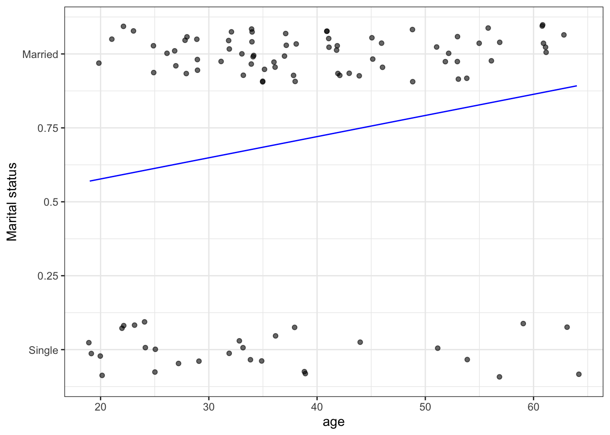
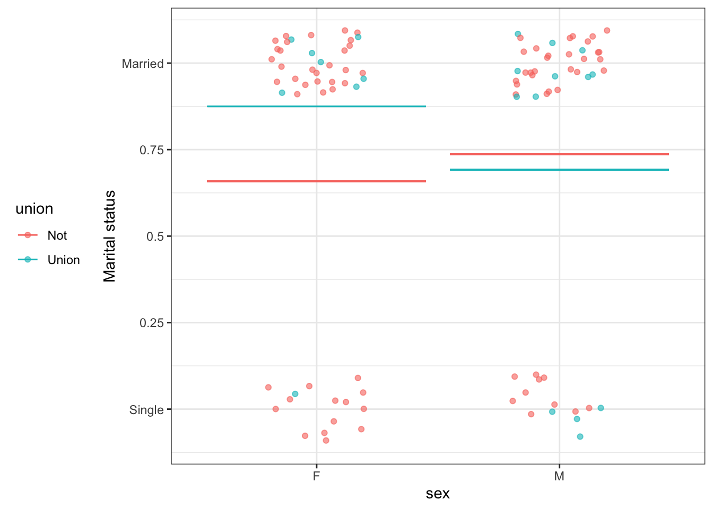

Chapter 5 Models and effect sizes
Summarizing a relationship with a function
We’ll start with models with a single degree of flexibility, that is \(^\circ{\cal F} = 1\). This includes all the settings covered in most introductory stats courses.
Degrees of flexibility more generally. Explain why “degrees of freedom” is harder than degress of flexibility. You can count degrees of flexibility.
5.1 Activity 2: Showing relationships
Each of the following settings shows n = 100 data points. The variables are shown on the axes and, sometimes, as the name of a color legend. For each of the settings, your task is to:
- Describe the relationship depicted. Be as quantitative as one could expect for an estimate by eye.
- Give the name of the appropriate inferential technique.
- Do you teach that technique in your introductory course.
- If not, where might students encounter that technique.
- Attempt to estimate, by eye and without whatever supplemental arithmetic is requires, the approximate values of the quantities produced by the technique in (2). For instance, is the relationship between the response and explanatory variables statistically discernable.1
5.1.1 Setting A

5.1.2 Setting B

5.1.3 Setting C

5.1.4 Setting D
5.1.5 Setting E
5.1.6 Setting F
5.1.7 Setting G

5.1.8 Setting H
5.1.9 Setting EYE

5.1.10 Setting J
Again, I’m using a proposed replacement for the traditional “significant.”↩